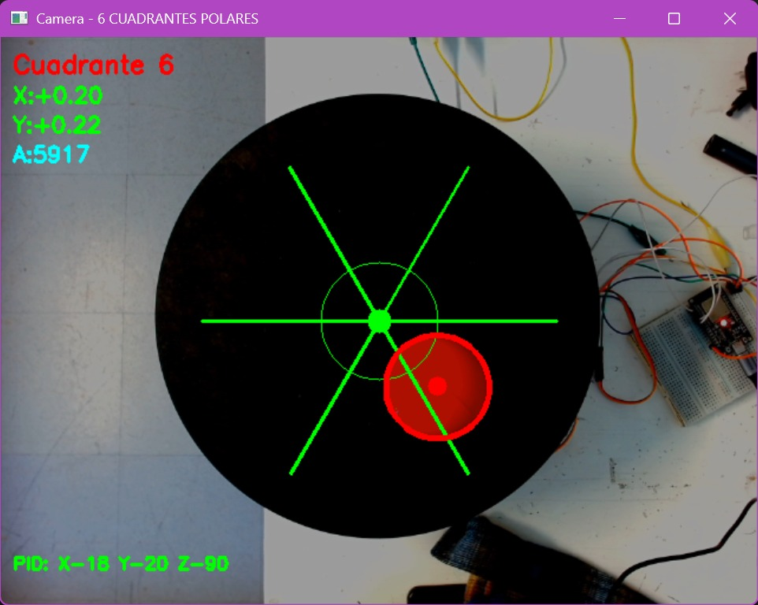
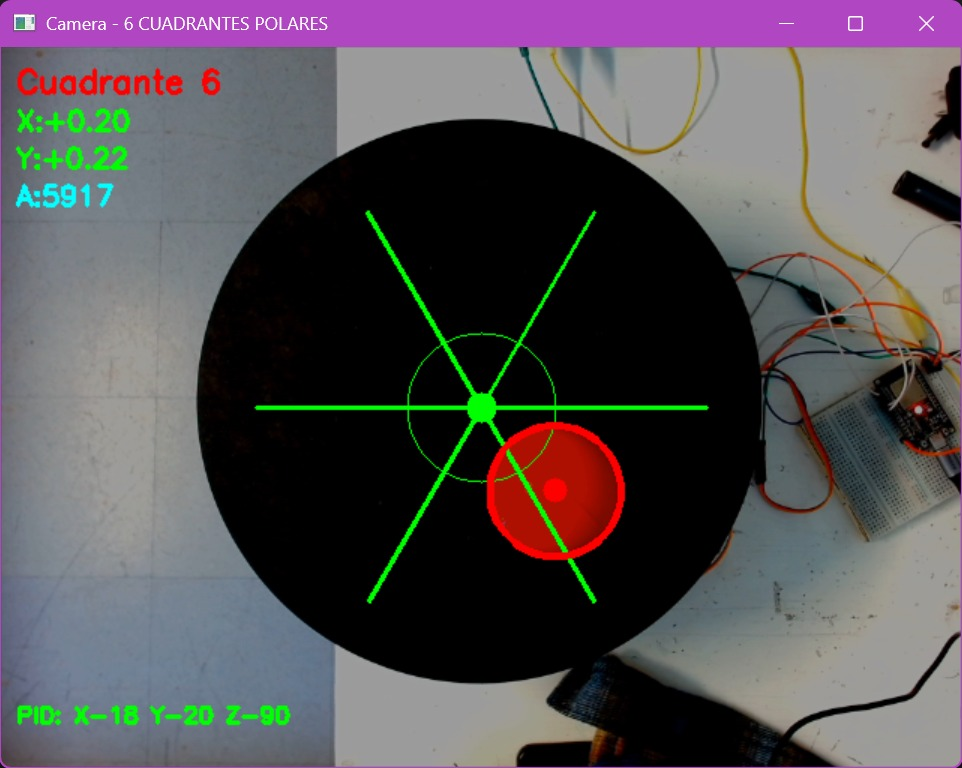

Proyecto Balsa Stewart
Resumen
- Nombre del proyecto: Plataforma niveladora con servomotores
- Equipo / Autor(es): Carlos Alberto Vasquez Perasa, Luis Hernesto Tamez Velazquez, Erik Andre Zepeda Tapia, Sebastian Gomez Rodrigues, Juan Manuel Gaona Serrano
- Curso / Asignatura: Introducción a la mecatronica
- Fecha: 05/11/2025
- Descripción breve: Este proyecto consiste en el desarrollo e implementación de una plataforma de autonivelación basada en la Plataforma Stewart. Este tipo de plataforma se utiliza en diversas industrias, como en simuladores de vuelo y posicionamiento de precisión.
Objetivo Principal
El objetivo principal es mantener un objeto, específicamente una pelota, en una posición fija sobre la superficie de la plataforma, evitando su caída.
Objetivos Específicos:
Visión por Computadora: Una cámara captura la posición y el color (rojo) de la pelota en tiempo real. Control: La información de la cámara es procesada por un programa en phyton que manda información a un programa c++ que se encarga del control de un SP32, que a su ves controla los servomotores. Actuación: La nivelación se ejecuta mediante el control preciso de tres servomotores ubicados con una separación de un angulo de 120°, los cuales ajustan los actuadores de la plataforma para inclinar y desplazar el plano y así mantener la pelota en el centro.
Incluye: Piezas de solidWorks y en .STL, planos para corte laser en .DXF, Codigo de la camara en phyton, codigo para SP32 en c++ - No incluye: La conexión de la parte mecanica, ni las medidad de los tornillos utilizados
Meta de la practica
Establecer una comunicación inalámbrica entre el ESP32 y un celular mediante Bluetooth, para recibir mensajes escritos desde una app móvil y mostrarlos en el monitor serial de la computadora.
Organización del Equipo
El equipo se dividió en dos áreas principales: desarrollo del codigo de programacion y desarrollo electrónico.
Materiales Utilizados
| Nombre de la Pieza | Cantidad |
|---|---|
| Tornillo de cabeza de casquillo M2 x 8 | 6 |
| Tornillo de cabeza de casquillo M2.5 x 10 | 4 |
| Tornillo de cabeza de casquillo M3 x 5 | 18 |
| Tornillo de cabeza de casquillo M3 x 10 | 3 |
| Tornillo de cabeza de casquillo M3 x 15 | 1 |
| Tornillo de cabeza de casquillo M3 x 20 | 3 |
| Tornillo de cabeza de casquillo M4 x 20 | 6 |
| Tornillo de cabeza de casquillo M4 x 30 | 6 |
| Tornillo de cabeza de casquillo M5 x 30 | 3 |
| BASE 3D | 1 |
| SEGUNDA BASE 3D | 1 |
| BRAZOS PRINCIPALES | 3 |
| BRAZOS SECUNDARIOS | 3 |
| Motores DC 15kg 180 grados | 3 |
| Balsa | 1 |
| Camara Webcam | 1 |
| Esp32 | 1 |
| Protoboard | 1 |
| Jumpers | +10 |
| Cable usb A | 1 |
| --- |
Tecnologías Utilizadas
- Lenguajes:
Python,C++,Visual Studio Code - Hardware:
ESP32,Arduino - Software:
ARDUINO IDE
Sistema Electrónico
Componentes principales -Controlador: ESP32 (Wi-Fi/Bluetooth integrado). -Actuadores: 3 servos de alto torque (15 kg·cm, 180°). -Fuente: Adaptador 5 V (corriente suficiente para 3 servos + ESP32). -Interconexión: Protoboard + jumpers. -Extras: Webcam Logitech (alimentación USB), volante Logitech G29 (alimentación propia), tornillería para montaje.
Diseño eléctrico y consideraciones
- Alimentación
Ingeniería de la carcasa
Se eligió PLA (impresión FDM) por su facilidad de fabricación y rigidez adecuada para temperaturas hasta ~55–60 °C. Las paredes principales son de 2.4 mm (tres perímetros de 0.8 mm), con nervaduras internas de 3 mm para reducir flexión en la tapa superior. Se añadieron insertos roscados M3 por calor en cuatro pilares, mejorando el ciclo de mantenimiento sin degradar el material. La ventilación se resolvió con ranuras de 6×1 mm alineadas sobre el regulador DC-DC y el driver del motor; la orientación de capa minimiza concentraciones de tensión en las esquinas (chaflanes de 1.5 mm). Se verificó holgura de 0.3 mm para acoplar el sensor N y evitar interferencias con el mazo de cables.
Programación
Todos los codigos desarrollados por el equipo se encuentran al final del reporte :)


 

Resultados y Observaciones
La conexión Bluetooth fue exitosa y estable. Los mensajes escritos desde el celular se reflejaban correctamente en el monitor serial. El ESP32 respondió de forma inmediata a los datos recibidos. No se presentaron errores de transmisión ni desconexiones durante la prueba.
Evidencias
Piezas Diseñadas en STL
Diseño de piezas en STL Las piezas del proyecto fueron modeladas en software CAD y exportadas en formato STL para su fabricación mediante impresión 3D. En las siguientes imágenes, tomadas desde PrusaSlicer, se aprecia la disposición y orientación de las piezas sobre la cama de impresión, así como los parámetros de configuración utilizados para optimizar la calidad y resistencia:
Estas configuraciones garantizan una fabricación precisa, reduciendo desperdicio de material y asegurando la funcionalidad mecánica del conjunto.


Reflexiones Finales
Al comenzar este proyecto, enfrentamos un gran desafío tanto en la parte mecánica como en la lógica de programación, ya que era un territorio nuevo dentro de nuestros conocimientos. Puedo decir que la visión artificial resultó ser una herramienta muy práctica y útil en nuestra vida diaria; nunca imaginábamos todo lo que podríamos lograr aplicándola.
Durante el desarrollo aprendimos a gestionar mejor nuestro tiempo, a ver más allá de la electrónica e incorporar también los aspectos mecánicos, físicos y cinemáticos del sistema. Esto nos permitió comprender mejor el comportamiento del conjunto y detectar fallas con mayor precisión, como la inclinación de los servomotores, las librerías utilizadas, los métodos de detección y los materiales empleados.
A pesar de ser un proceso exigente y lleno de retos, también fue una experiencia divertida y emocionante. Sin duda, esperamos realizar más proyectos de este tipo en el futuro para seguir aprendiendo y mejorando nuestras habilidades en ingeniería mecatrónica.sino que también abrió oportunidades para futuras mejoras, como la optimización del consumo energético y la incorporación de sistemas más avanzados de control y sensorización.
Codigo Principal
import cv2
import numpy as np
import math
import serial
import time
# ===================== CONFIGURACION SERIAL =====================
PUERTO_SERIAL = 'COM11' # <-- AJUSTA ESTO AL PUERTO DE TU ESP32
BAUDRATE = 115200
TIMEOUT = 0.01
try:
arduino = serial.Serial(PUERTO_SERIAL, BAUDRATE, timeout=TIMEOUT)
time.sleep(2)
print("✓ Serial conectado en", PUERTO_SERIAL)
except Exception as e:
print(f"✗ ERROR: No se pudo conectar en {PUERTO_SERIAL}. {e}")
arduino = None
# ===================== PARAMETROS HOUGH (PLATO) =====================
dp = 0.8
minDist = 280
param1 = 165
param2 = 15
minRadius = 130
maxRadius = 211
# ===================== FILTRO EXPONENCIAL DEL PLATO =====================
alpha_plato = 0.9
plato_cx_f = plato_cy_f = plato_r_f = None
# ===================== COEFICIENTES DE SUAVIZADO DE ERROR =====================
alpha_err = 0.6
errX_f = errY_f = 0.0
# ===================== VIDEO =====================
cap = cv2.VideoCapture(0)
cap.set(cv2.CAP_PROP_FRAME_WIDTH, 640)
cap.set(cv2.CAP_PROP_FRAME_HEIGHT, 480)
# ===================== ANGULOS DE SERVO (INICIALES) =====================
BASE_ANGLE = 50.0
MIN_ANGLE = 30.0
MAX_ANGLE = 70.0
COS_30 = math.cos(math.radians(30))
SIN_30 = math.sin(math.radians(30))
# ===================== PID BASICO =====================
class PID:
def __init__(self, Kp, Ki, Kd, setpoint=0, dt=0.03):
self.Kp = Kp
self.Ki = Ki
self.Kd = Kd
self.setpoint = setpoint
self.dt = dt
self.prev_error = 0
self.integral = 0
def update(self, measurement):
error = self.setpoint - measurement
self.integral += error * self.dt
self.integral = np.clip(self.integral, -50, 50)
derivative = (error - self.prev_error) / self.dt
output = self.Kp * error + self.Ki * self.integral + self.Kd * derivative
output = np.clip(output, -20, 20)
self.prev_error = error
return output
# Inicializar PIDs de inclinación
pid_dt = 0.03
pid_x = PID(Kp=10.0, Ki=0.2, Kd=1.0, dt=pid_dt)
pid_y = PID(Kp=10.0, Ki=0.2, Kd=1.0, dt=pid_dt)
# ===================== CINEMÁTICA DE 3 SERVOS =====================
def calcular_angulos_servos(theta_x, theta_y, base_angle, min_angle, max_angle):
angle_1 = base_angle + theta_y
angle_2 = base_angle + (theta_x * COS_30) - (theta_y * SIN_30)
angle_3 = base_angle - (theta_x * COS_30) - (theta_y * SIN_30)
angle_1 = np.clip(angle_1, min_angle, max_angle)
angle_2 = np.clip(angle_2, min_angle, max_angle)
angle_3 = np.clip(angle_3, min_angle, max_angle)
return int(angle_1), int(angle_2), int(angle_3)
# ===================== ENVIO DE CONFIGURACION AL ESP32 =====================
def enviar_config_angulos(base, min_ang, max_ang):
"""Envía la configuración de ángulos al ESP32"""
if arduino is not None:
try:
comando_config = f"CFG:BASE:{base},MIN:{min_ang},MAX:{max_ang}\n"
arduino.write(comando_config.encode('ascii'))
print(f"✓ Config enviada: BASE={base}°, MIN={min_ang}°, MAX={max_ang}°")
except Exception as e:
print(f"Error al enviar config: {e}")
# ===================== CONFIGURACIÓN DE TRACKBARS =====================
def on_trackbar(val):
pass
# Función para crear imagen de información con valores reales
def crear_imagen_info_pid(kp, ki, kd):
img = np.zeros((150, 400, 3), dtype=np.uint8)
img[:] = (40, 40, 40) # Fondo gris oscuro
font = cv2.FONT_HERSHEY_SIMPLEX
cv2.putText(img, "VALORES PID ACTUALES", (70, 30), font, 0.7, (255, 255, 255), 2)
cv2.line(img, (20, 40), (380, 40), (100, 100, 100), 1)
cv2.putText(img, f"Kp = {kp:.2f}", (50, 75), font, 0.8, (0, 255, 255), 2)
cv2.putText(img, f"Ki = {ki:.3f}", (50, 105), font, 0.8, (0, 255, 255), 2)
cv2.putText(img, f"Kd = {kd:.2f}", (50, 135), font, 0.8, (0, 255, 255), 2)
return img
def crear_imagen_info_angulos(base, min_ang, max_ang):
img = np.zeros((150, 400, 3), dtype=np.uint8)
img[:] = (40, 40, 40) # Fondo gris oscuro
font = cv2.FONT_HERSHEY_SIMPLEX
cv2.putText(img, "ANGULOS DE SERVOS", (85, 30), font, 0.7, (255, 255, 255), 2)
cv2.line(img, (20, 40), (380, 40), (100, 100, 100), 1)
cv2.putText(img, f"Base = {base}.0 grados", (50, 75), font, 0.7, (255, 165, 0), 2)
cv2.putText(img, f"Min = {min_ang}.0 grados", (50, 105), font, 0.7, (255, 165, 0), 2)
cv2.putText(img, f"Max = {max_ang}.0 grados", (50, 135), font, 0.7, (255, 165, 0), 2)
return img
# Crear ventana de control PID
cv2.namedWindow("PID Tuner")
cv2.resizeWindow("PID Tuner", 400, 150)
# Trackbars PID (sin texto de unidades, se muestra en la imagen)
cv2.createTrackbar("Kp x10", "PID Tuner", int(pid_x.Kp * 10), 500, on_trackbar)
cv2.createTrackbar("Ki x100", "PID Tuner", int(pid_x.Ki * 100), 100, on_trackbar)
cv2.createTrackbar("Kd x10", "PID Tuner", int(pid_x.Kd * 10), 50, on_trackbar)
# Crear ventana de control de Ángulos
cv2.namedWindow("Servo Angles")
cv2.resizeWindow("Servo Angles", 400, 150)
# Trackbars de ángulos (0-180 grados)
cv2.createTrackbar("Base", "Servo Angles", int(BASE_ANGLE), 180, on_trackbar)
cv2.createTrackbar("Min", "Servo Angles", int(MIN_ANGLE), 180, on_trackbar)
cv2.createTrackbar("Max", "Servo Angles", int(MAX_ANGLE), 180, on_trackbar)
# Enviar configuración inicial
enviar_config_angulos(int(BASE_ANGLE), int(MIN_ANGLE), int(MAX_ANGLE))
print("🎯 Detección de Plato y Errores de Pelota (Fondo Negro)")
print("📐 Ajusta los ángulos en tiempo real con los sliders")
print("Presiona 'q' para salir")
# Variables para detectar cambios en ángulos
prev_base = int(BASE_ANGLE)
prev_min = int(MIN_ANGLE)
prev_max = int(MAX_ANGLE)
# Bucle principal de control
while True:
# --- LECTURA Y ACTUALIZACIÓN DEL PID ---
kp_val = cv2.getTrackbarPos("Kp x10", "PID Tuner") / 10.0
ki_val = cv2.getTrackbarPos("Ki x100", "PID Tuner") / 100.0
kd_val = cv2.getTrackbarPos("Kd x10", "PID Tuner") / 10.0
pid_x.Kp, pid_x.Ki, pid_x.Kd = kp_val, ki_val, kd_val
pid_y.Kp, pid_y.Ki, pid_y.Kd = kp_val, ki_val, kd_val
# --- LECTURA DE ÁNGULOS DESDE TRACKBARS ---
current_base = cv2.getTrackbarPos("Base", "Servo Angles")
current_min = cv2.getTrackbarPos("Min", "Servo Angles")
current_max = cv2.getTrackbarPos("Max", "Servo Angles")
# Mostrar valores reales en las ventanas de trackbars
img_pid_info = crear_imagen_info_pid(kp_val, ki_val, kd_val)
cv2.imshow("PID Tuner", img_pid_info)
img_angle_info = crear_imagen_info_angulos(current_base, current_min, current_max)
cv2.imshow("Servo Angles", img_angle_info)
# Validar que Min < Base < Max
if current_min >= current_max:
current_max = current_min + 1
cv2.setTrackbarPos("Max", "Servo Angles", current_max)
if current_base < current_min:
current_base = current_min
cv2.setTrackbarPos("Base", "Servo Angles", current_base)
elif current_base > current_max:
current_base = current_max
cv2.setTrackbarPos("Base", "Servo Angles", current_base)
# Detectar cambios y enviar nueva configuración
if (current_base != prev_base or current_min != prev_min or current_max != prev_max):
enviar_config_angulos(current_base, current_min, current_max)
prev_base, prev_min, prev_max = current_base, current_min, current_max
# --- RESTO DE LÓGICA DE VISIÓN Y CONTROL ---
ret, frame = cap.read()
if not ret:
break
frame = cv2.flip(frame, 1)
frame_display = frame.copy()
# --- 1) DETECCION DEL PLATO (HOUGH) ---
gray = cv2.cvtColor(frame, cv2.COLOR_BGR2GRAY)
blurred = cv2.GaussianBlur(gray, (5,5), 0)
circles = cv2.HoughCircles(
blurred, cv2.HOUGH_GRADIENT,
dp=dp, minDist=minDist,
param1=param1, param2=param2,
minRadius=minRadius, maxRadius=maxRadius
)
plato_cx, plato_cy, plato_r = None, None, None
if circles is not None:
circles = np.round(circles[0, :]).astype("int")
radios = [r for (_,_,r) in circles]
idx = np.argmax(radios)
plato_cx, plato_cy, plato_r = circles[idx]
if plato_cx_f is None:
plato_cx_f, plato_cy_f, plato_r_f = plato_cx, plato_cy, plato_r
else:
plato_cx_f = int(alpha_plato*plato_cx + (1-alpha_plato)*plato_cx_f)
plato_cy_f = int(alpha_plato*plato_cy + (1-alpha_plato)*plato_cy_f)
plato_r_f = int(alpha_plato*plato_r + (1-alpha_plato)*plato_r_f)
cv2.circle(frame_display, (plato_cx_f, plato_cy_f), plato_r_f, (0,255,0), 3)
cv2.circle(frame_display, (plato_cx_f, plato_cy_f), 6, (0,255,0), -1) # Centro
# --- NUEVO CÍRCULO: ZONA MUERTA ---
DEADZONE_RADIUS = 10 # Radio en píxeles para la zona muerta (ajusta si es necesario)
cv2.circle(frame_display, (plato_cx_f, plato_cy_f), DEADZONE_RADIUS, (0,165,255), 2)
cv2.putText(frame_display, f"PLATO DETECTADO (r={plato_r_f})",
(plato_cx_f - 120, plato_cy_f - plato_r_f - 10),
cv2.FONT_HERSHEY_SIMPLEX, 0.6, (0,255,0), 2)
else:
plato_cx_f = plato_cy_f = plato_r_f = None
cv2.putText(frame_display, "PLATO NO DETECTADO", (10, 30), cv2.FONT_HERSHEY_SIMPLEX, 0.7, (0,0,255), 2)
# --- A) ENMASCARAMIENTO CIRCULAR (FONDO NEGRO) ---
if plato_cx_f is not None:
mask_plato = np.zeros(frame.shape[:2], dtype="uint8")
cv2.circle(mask_plato, (plato_cx_f, plato_cy_f), plato_r_f - 5, 255, -1)
frame_deteccion = cv2.bitwise_and(frame, frame, mask=mask_plato)
else:
frame_deteccion = frame
# --- 2) DETECCION PELOTA ROJA (COLOR / CENTROIDE) ---
red_low1 = np.array([0, 150, 50], np.uint8)
red_high1 = np.array([8, 255, 255], np.uint8)
red_low2 = np.array([170, 150, 50], np.uint8)
red_high2 = np.array([179, 255, 255], np.uint8)
hsv = cv2.cvtColor(frame_deteccion, cv2.COLOR_BGR2HSV)
mask1 = cv2.inRange(hsv, red_low1, red_high1)
mask2 = cv2.inRange(hsv, red_low2, red_high2)
mask = cv2.add(mask1, mask2)
kernel = cv2.getStructuringElement(cv2.MORPH_ELLIPSE, (5,5))
mask = cv2.morphologyEx(mask, cv2.MORPH_OPEN, kernel)
mask = cv2.morphologyEx(mask, cv2.MORPH_CLOSE, kernel)
contornos, _ = cv2.findContours(mask, cv2.RETR_EXTERNAL, cv2.CHAIN_APPROX_SIMPLE)
mejor_c = None
mejor_cx = mejor_cy = 0
mejor_area = 0
for c in contornos:
area = cv2.contourArea(c)
if 100 < area < 5000:
M = cv2.moments(c)
if M["m00"] != 0:
cx = int(M["m10"]/M["m00"])
cy = int(M["m01"]/M["m00"])
if mejor_c is None or area > mejor_area:
mejor_c, mejor_cx, mejor_cy, mejor_area = c, cx, cy, area
# --- 3) CALCULO Y SUAVIZADO DE ERROR ---
errX_raw = 0.0
errY_raw = 0.0
pelota_detectada = False
if mejor_c is not None and plato_cx_f is not None:
dist_al_centro = math.hypot(mejor_cx - plato_cx_f, mejor_cy - plato_cy_f)
if dist_al_centro < plato_r_f:
pelota_detectada = True
errX_raw = mejor_cx - plato_cx_f
errY_raw = mejor_cy - plato_cy_f
if plato_r_f > 0:
errX_norm = errX_raw / plato_r_f
errY_norm = errY_raw / plato_r_f
else:
errX_norm, errY_norm = 0.0, 0.0
errX_f = alpha_err * errX_norm + (1-alpha_err) * errX_f
errY_f = alpha_err * errY_norm + (1-alpha_err) * errY_f
cv2.circle(frame_display, (mejor_cx, mejor_cy), 8, (0,0,255), -1)
cv2.line(frame_display, (mejor_cx, mejor_cy), (plato_cx_f, plato_cy_f), (255,0,0), 2)
else:
errX_f, errY_f = 0.0, 0.0
# RESETEAR PID cuando no hay pelota
pid_x.integral = 0.0
pid_y.integral = 0.0
pid_x.prev_error = 0.0
pid_y.prev_error = 0.0
else:
errX_f, errY_f = 0.0, 0.0
# RESETEAR PID cuando no hay pelota
pid_x.integral = 0.0
pid_y.integral = 0.0
pid_x.prev_error = 0.0
pid_y.prev_error = 0.0
# --- 4) CONTROL PID Y ENVÍO SERIAL (🎯 LÓGICA CORREGIDA) ---
errX_input = errX_f * 100
errY_input = errY_f * 100
# Zona muerta para estabilidad
DEADZONE_ERR_INPUT = 5.0
if abs(errX_input) < DEADZONE_ERR_INPUT:
errX_input = 0.0
if abs(errY_input) < DEADZONE_ERR_INPUT:
errY_input = 0.0
# 🎯 CORRECCIÓN CLAVE: INVERTIR SEÑAL DE CONTROL
theta_X = -pid_x.update(errX_input) # ← NEGATIVO: COMPENSA el error
theta_Y = -pid_y.update(errY_input) # ← NEGATIVO: COMPENSA el error
# Limitar inclinaciones extremas
theta_X = np.clip(theta_X, -25, 25)
theta_Y = np.clip(theta_Y, -25, 25)
A1, A2, A3 = calcular_angulos_servos(theta_X, theta_Y, current_base, current_min, current_max)
comando = f"A1:{A1},A2:{A2},A3:{A3}\n"
if arduino is not None:
try:
arduino.write(comando.encode('ascii'))
except Exception as e:
print(f"Error al enviar datos: {e}")
# --- 5) HUD FINAL ---
font = cv2.FONT_HERSHEY_SIMPLEX
cv2.putText(frame_display, f"Kp:{kp_val:.1f} Ki:{ki_val:.2f} Kd:{kd_val:.1f}",
(10, frame_display.shape[0]-120), font, 0.5, (255,255,0), 2)
cv2.putText(frame_display, f"Base:{current_base} Min:{current_min} Max:{current_max}",
(10, frame_display.shape[0]-95), font, 0.5, (255,165,0), 2)
cv2.putText(frame_display, f"Angulos: A1:{A1} A2:{A2} A3:{A3}",
(10, frame_display.shape[0]-70), font, 0.5, (255,255,0), 2)
if pelota_detectada:
cv2.putText(frame_display,
f'Inclinacion X,Y: ({theta_X:+.1f} deg, {theta_Y:+.1f} deg)',
(10, frame_display.shape[0]-45), font, 0.5, (0,255,0), 2)
cv2.putText(frame_display,
f'Error Norm X,Y: ({errX_f:+.2f}, {errY_f:+.2f})',
(10, frame_display.shape[0]-20), font, 0.5, (0,255,255), 2)
else:
cv2.putText(frame_display, "PELOTA NO DETECTADA O FUERA DEL PLATO",
(10, frame_display.shape[0]-20), font, 0.5, (0,165,255), 2)
cv2.imshow('CONTROL DE BALANZA (PID ACTIVO)', frame_display)
cv2.imshow('Imagen de Deteccion (Solo Plato Visible)', frame_deteccion)
if cv2.waitKey(1) & 0xFF == ord('q'):
break
time.sleep(pid_dt)
# ===================== LIMPIEZA =====================
print("\n✓ Sistema cerrado. Centrando Servos...")
if arduino is not None:
comando_cierre = f"A1:{current_base},A2:{current_base},A3:{current_base}\n"
arduino.write(comando_cierre.encode('ascii'))
time.sleep(0.5)
arduino.close()
cap.release()
cv2.destroyAllWindows()
Codigo Test de Cuadrantes
import cv2
import numpy as np
import serial
import serial.tools.list_ports
import time
import math
# Configuración serial ARDUINO UNO
PUERTO_SERIAL = 'COM11'
BAUDRATE = 11520
TIMEOUT = 0.01
# Slicers interactivos para área
min_area = 100
max_area = 8000
alto_slicer = 30
# Variables globales para mouse
mouse_x, mouse_y = 0, 0
# Función para encontrar puerto Arduino automáticamente
def encontrar_arduino():
puertos = serial.tools.list_ports.comports()
for puerto in puertos:
if 'Arduino' in puerto.description or 'CH340' in puerto.description or 'USB-SERIAL' in puerto.description:
return puerto.device
return None
# Función slicer interactivo
def dibujar_slicer(frame, y_pos, valor, label, min_val, max_val, color=(0,255,0)):
ancho = frame.shape[1] - 20
x_inicio = 10
cv2.rectangle(frame, (x_inicio, y_pos), (x_inicio + ancho, y_pos + alto_slicer), (50,50,50), -1)
proporcion = (valor - min_val) / (max_val - min_val)
ancho_activo = int(proporcion * ancho)
cv2.rectangle(frame, (x_inicio, y_pos), (x_inicio + ancho_activo, y_pos + alto_slicer), color, -1)
cv2.putText(frame, f'{label}: {int(valor)}', (x_inicio, y_pos-5),
cv2.FONT_HERSHEY_SIMPLEX, 0.6, (255,255,255), 2)
cv2.putText(frame, f'[{min_val}-{max_val}]', (x_inicio + ancho + 10, y_pos + 22),
cv2.FONT_HERSHEY_SIMPLEX, 0.5, (150,150,150), 1)
# 🔥 FUNCIÓN 6 CUADRANTES POLARES (60° cada uno)
def obtener_cuadrante_6(cx, cy, centrox, centroy):
"""
Divide en 6 cuadrantes polares cada 60° + CENTRO_SUP/INF
Ángulos: 0°(Der), 60°, 120°, 180°(Izq), 240°, 300°
"""
dx = cx - centrox
dy = cy - centroy
# Distancia desde centro (para detectar centro)
distancia = math.sqrt(dx**2 + dy**2)
radio_centro = 50 # Píxeles para considerar "centro"
if distancia < radio_centro:
if dy < 0: # CENTRO_SUPERIOR
return "CENTRO_SUP", 0.0, 0.0, (0, 255, 255)
else: # CENTRO_INFERIOR
return "CENTRO_INF", 0.0, 0.0, (255, 255, 0)
# Ángulo polar (0°=derecha, sentido antihorario)
angulo = math.atan2(dy, dx) * 180 / math.pi
if angulo < 0:
angulo += 360
# Dividir en 6 sectores de 60°
sector = int(angulo // 60)
if sector == 0:
cuadrante = "Cuadrante 6"
color_cuad = (0, 0, 255) # Rojo
elif sector == 1:
cuadrante = "Cuadrante 5"
color_cuad = (0, 165, 255) # Naranja
elif sector == 2:
cuadrante = "Cuadrante 4"
color_cuad = (255, 0, 255) # Magenta
elif sector == 3:
cuadrante = "Cuadrante 3"
color_cuad = (255, 255, 0) # Cian
elif sector == 4:
cuadrante = "Cuadrante 2"
color_cuad = (255, 0, 0) # Rosa
else: # sector == 5
cuadrante = "Cuadrante 1"
color_cuad = (0, 255, 0) # Verde
# Errores normalizados por distancia máxima
dist_max = 250 # Radio máximo para normalización
error_magnitud = np.clip(distancia / dist_max, 0, 1.0)
# Dirección del error (vector unitario)
errorX_norm = (dx / distancia) * error_magnitud if distancia > 0 else 0
errorY_norm = (dy / distancia) * error_magnitud if distancia > 0 else 0
return cuadrante, errorX_norm, errorY_norm, color_cuad
# Mouse callback para ventana SLICER
def mouse_callback_slicer(event, x, y, flags, param):
global min_area, max_area, mouse_x, mouse_y
mouse_x, mouse_y = x, y
if event == cv2.EVENT_MOUSEWHEEL:
if 100 <= y <= 160:
delta = 50 if event > 0 else -50
if 100 <= y <= 130:
min_area = np.clip(min_area + delta, 50, 5000)
else:
max_area = np.clip(max_area + delta * 2, 500, 15000)
# Inicializar comunicación serial
print("🔍 Buscando Arduino en COM11...")
try:
arduino = serial.Serial(PUERTO_SERIAL, BAUDRATE, timeout=TIMEOUT)
time.sleep(2)
print("✓ Serial conectado en COM11")
except:
print("✗ ERROR: No se pudo conectar en COM11")
exit()
# Clase PID
class PID:
def __init__(self, Kp, Ki, Kd, setpoint=0, dt=0.03):
self.Kp = Kp
self.Ki = Ki
self.Kd = Kd
self.setpoint = setpoint
self.dt = dt
self.prev_error = 0
self.integral = 0
self.output = 0
def update(self, measurement):
error = self.setpoint - measurement
self.integral += error * self.dt
self.integral = np.clip(self.integral, -50, 50)
derivative = (error - self.prev_error) / self.dt
self.output = self.Kp * error + self.Ki * self.integral + self.Kd * derivative
self.output = np.clip(self.output, -90, 90)
self.prev_error = error
return self.output
# Inicializar PIDs
pid_x = PID(Kp=0.8, Ki=0.05, Kd=0.15)
pid_y = PID(Kp=0.8, Ki=0.05, Kd=0.15)
pid_area = PID(Kp=0.3, Ki=0.02, Kd=0.08, setpoint=2000)
cap = cv2.VideoCapture(0)
cap.set(cv2.CAP_PROP_FRAME_WIDTH, 640)
cap.set(cv2.CAP_PROP_FRAME_HEIGHT, 480)
alpha = 0.6
prev_errorX, prev_errorY = 0, 0
print("\n🎯 BALANZA PID 3D - 6 CUADRANTES POLARES")
print("VENTANA 1: 'Camera' → 6 sectores 60° + CENTRO_SUP/INF")
print("VENTANA 2: 'SLICER' → ↑↓Rueda | A/Z:Min | S/X:Max")
# 2 VENTANAS
ventana_camera = 'Camera - 6 CUADRANTES POLARES'
ventana_slicer = 'SLICER CONTROL'
cv2.namedWindow(ventana_camera)
cv2.namedWindow(ventana_slicer)
cv2.setMouseCallback(ventana_slicer, mouse_callback_slicer)
frame_slicer = np.zeros((200, 320, 3), dtype=np.uint8)
frame_slicer.fill(20)
while True:
ret, frame = cap.read()
if not ret:
break
frame = cv2.flip(frame, 1)
centrox = frame.shape[1] // 2
centroy = frame.shape[0] // 2
# Detección roja
redbajo1 = np.array([0, 150, 50], np.uint8)
redalto1 = np.array([8, 255, 255], np.uint8)
redbajo2 = np.array([170, 150, 50], np.uint8)
redalto2 = np.array([179, 255, 255], np.uint8)
hsv = cv2.cvtColor(frame, cv2.COLOR_BGR2HSV)
mask1 = cv2.inRange(hsv, redbajo1, redalto1)
mask2 = cv2.inRange(hsv, redbajo2, redalto2)
mask = cv2.add(mask1, mask2)
kernel = cv2.getStructuringElement(cv2.MORPH_ELLIPSE, (5,5))
mask = cv2.morphologyEx(mask, cv2.MORPH_OPEN, kernel)
mask = cv2.morphologyEx(mask, cv2.MORPH_CLOSE, kernel)
contornos, _ = cv2.findContours(mask, cv2.RETR_EXTERNAL, cv2.CHAIN_APPROX_SIMPLE)
mejor_contorno = None
mejor_cx, mejor_cy, mejor_area = None, None, 0
cuadrante_actual = "CENTRO"
errorX_norm, errorY_norm = 0, 0
for c in contornos:
area = cv2.contourArea(c)
if min_area < area < max_area:
M = cv2.moments(c)
if M["m00"] != 0:
cx = int(M["m10"] / M["m00"])
cy = int(M["m01"] / M["m00"])
if mejor_contorno is None or area > mejor_area:
mejor_contorno = c
mejor_cx, mejor_cy = cx, cy
mejor_area = area
if mejor_contorno is not None:
cuadrante_actual, errorX_norm, errorY_norm, color_cuad = obtener_cuadrante_6(
mejor_cx, mejor_cy, centrox, centroy
)
errorX = alpha * errorX_norm + (1-alpha) * prev_errorX
errorY = alpha * errorY_norm + (1-alpha) * prev_errorY
prev_errorX, prev_errorY = errorX, errorY
else:
errorX, errorY = 0, 0
arduino.write(b"X:0,Y:0,Z:0\n")
outputX = pid_x.update(errorX * 100)
outputY = pid_y.update(errorY * 100)
outputArea = pid_area.update(mejor_area)
comando = f"X:{int(outputX)},Y:{int(outputY)},Z:{int(outputArea)}\n"
arduino.write(comando.encode())
# 🔥 VENTANA 1: CÁMARA + 6 LÍNEAS POLARES
font = cv2.FONT_HERSHEY_SIMPLEX
# Círculo centro + área sensible
cv2.circle(frame, (centrox, centroy), 10, (0, 255, 0), -1)
cv2.circle(frame, (centrox, centroy), 50, (0, 255, 0), 1) # Radio CENTRO
# 🔥 6 LÍNEAS RADIALES CADA 60° (150px largo)
radio_lineas = 150
for angulo in range(0, 360, 60):
rad = math.radians(angulo)
x_fin = int(centrox + radio_lineas * math.cos(rad))
y_fin = int(centroy + radio_lineas * math.sin(rad))
cv2.line(frame, (centrox, centroy), (x_fin, y_fin), (0, 255, 0), 2)
if mejor_contorno is not None:
cv2.circle(frame, (int(mejor_cx), int(mejor_cy)), 8, color_cuad, -1)
hull = cv2.convexHull(mejor_contorno)
cv2.drawContours(frame, [hull], 0, color_cuad, 3)
cv2.putText(frame, f'{cuadrante_actual}', (10, 30), font, 0.7, color_cuad, 2)
cv2.putText(frame, f'X:{errorX_norm:+.2f}', (10, 55), font, 0.6, (0,255,0), 2)
cv2.putText(frame, f'Y:{errorY_norm:+.2f}', (10, 80), font, 0.6, (0,255,0), 2)
cv2.putText(frame, f'A:{int(mejor_area)}', (10, 105), font, 0.6, (255,255,0), 2)
cv2.putText(frame, f'PID: X{int(outputX)} Y{int(outputY)} Z{int(outputArea)}',
(10, frame.shape[0]-30), font, 0.5, (0,255,0), 2)
else:
cv2.putText(frame, 'NO BALL', (10, 105), font, 0.6, (0,0,255), 2)
# 🔥 VENTANA 2: SLICERS
frame_slicer.fill(20)
dibujar_slicer(frame_slicer, 100, min_area, 'MIN_AREA', 50, 5000, (0,255,0))
dibujar_slicer(frame_slicer, 135, max_area, 'MAX_AREA', 500, 15000, (0,150,255))
cv2.circle(frame_slicer, (mouse_x, mouse_y), 5, (255,255,255), -1)
font_slicer = cv2.FONT_HERSHEY_SIMPLEX
cv2.putText(frame_slicer, f'↑↓Rueda sobre slicers', (10, 50), font_slicer, 0.4, (255,255,0), 1)
cv2.putText(frame_slicer, f'A/Z:Min±100 S/X:Max±200', (10, 75), font_slicer, 0.4, (255,255,0), 1)
cv2.putText(frame_slicer, f'Rango: {min_area}-{max_area}', (10, 180), font_slicer, 0.5, (0,255,255), 2)
cv2.imshow(ventana_camera, frame)
cv2.imshow(ventana_slicer, frame_slicer)
tecla = cv2.waitKey(1) & 0xFF
if tecla == ord('a'): min_area = max(50, min_area - 100); print(f"MIN_AREA: {min_area}")
if tecla == ord('z'): min_area = min(5000, min_area + 100); print(f"MIN_AREA: {min_area}")
if tecla == ord('s'): max_area = max(500, max_area - 200); print(f"MAX_AREA: {max_area}")
if tecla == ord('x'): max_area = min(15000, max_area + 200); print(f"MAX_AREA: {max_area}")
if tecla == ord('q'):
break
# Limpieza
arduino.write(b"X:0,Y:0,Z:0\n")
time.sleep(0.5)
cap.release()
arduino.close()
cv2.destroyAllWindows()
print("✓ Sistema cerrado correctamente")
Serial.println("Recibido: " + mensaje);
delay(1000);
}